Design Time Results¶
These results provide a methodology and a means for application developers and system integrators to determine conservative, precise, tightly bounded performance metrics for distributed networked applications and systems at design time. The contributions of this work are broken into sections by topic:
- Periodic System Analysis
- Proving the Minimum Analysis for System Stability
- Comparison with NC/RTC
- Analysis of TDMA Scheduling
- Compositional Analysis
- Delay Analysis
- Routing Analysis
Periodic System Analysis¶
One subset of systems which we would like to analyze are periodic systems, since many systems in the real world exhibit some form of periodicity, e.g. satellites in orbit, traffic congestion patterns, power draw patterns. We define systems to be periodic if the data production rate (or consumption rate) of the system is a periodic function of time. The time-integral of these periodic data consumption/production rates is the cumulative data production/consumption of the system. These cumulative functions are called repeating.
Given that the required data profile and system data service profile are repeating, we must determine the periodicity of the output profile. If we can show that the output profile similarly repeats, then we can show that the system has no unbounded buffer growth. First, let us look at the profile behavior over the course of its first two periods of activity.
We will examine two systems, system (1) and system (2). Firstly, examine (1), shown below (note: you can click on the images to open them in a larger format):
| System (1) Bandwidth for 1 Period | System (1) Data for 1 Period |
|---|---|
| 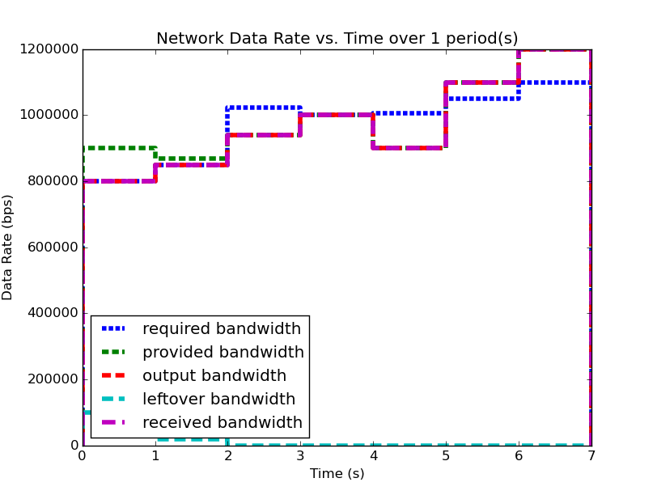 |
{kind=link}
{kind=link}
| System (1) Bandwidth for 2 Periods | System (1) Data for 2 Periods |
|---|---|
| 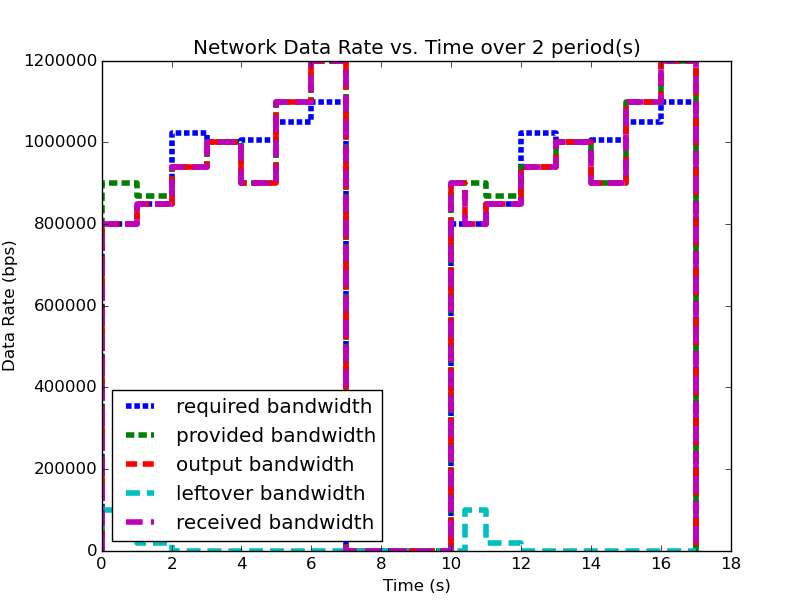 |
{kind=link}
{kind=link}
We notice that for this example system, the second period output profile is not an exact copy of the first (most easily seen by examining the bandwidth plots), and yet the required buffer size is still the same as it was when analyzing the system over one period. Furthermore, by running the analysis over even larger number of periods, we can determine (not plotted here for space and readability), that the predicted buffer size does not change no matter how many periods we analyze for this system.
Let us look at a system where this is not the case before we begin the analysis of such system characteristics.
| System (2) Bandwidth for 1 Period | System (2) Data for 1 Period |
|---|---|
{kind=link}
{kind=link}
| System (2) Bandwidth for 2 Periods | System (2) Data for 2 Periods |
|---|---|

|
{kind=link}
Notice in system (2), the first period analysis predicted the same buffer size and delay as system (1), but when analyzing two periods the predicted buffer size changed. Clearly the behavior of the system is changing between these two periods. If we continue to analyze more periods of system (2), as we did with system (1), we’ll find the unfortunate conclusion that the predicted buffer size increases with every period we add to the analysis.
We have discovered a system level property that can be calculated from these profiles, but we must determine what it means and how it can be used. First, we see that in system (1), the predicted required buffer size does not change regarless of the number of periods over which we analyze the system. Second, we see that for system (2), the predicted required buffer size changes depending on how many periods of activity we choose for our analysis window. Third, we see that the second period of system (2) contains the larger of the two predicted buffer sizes. These observations (with our understanding of deterministic periodic systems) lead us to the conclusion: system (2) can no longer be classified as periodic, since its behavior is not consistent between its periods. Furthermore, because the required buffer size predicted for system system (2) continually increases, we can determine that the system is in fact unstable due to unbounded buffer growth.
Proving the Minimum Analysis for System Stability¶
Let us now formally prove the assertion about system periodicity and stability which has been stated above. We will show that our analysis results provide quantitative measures about the behavior of the system and we will determine for how long we must analyze a system to glean such behaviors.
Typically, periodicity is defined for functions as the equality:
but for our type of system analysis this cannot hold since we deal with cumulative functions (of data vs. time). Instead we must define a these functions to be repeating, where a function is repeating iff:
Clearly, a repeating function  is periodic iff
. Note that repeating functions like the cumulative
data vs. time profiles we deal with, are the result of integrating
periodic functions, like the periodic bandwidth vs. time profiles we
use to describe application network traffic and system network
capacity. All periodic functions, when integrated, produce repeating
functions and similarly, all repeating functions, when differentiated,
procduce periodic functions.
is periodic iff
. Note that repeating functions like the cumulative
data vs. time profiles we deal with, are the result of integrating
periodic functions, like the periodic bandwidth vs. time profiles we
use to describe application network traffic and system network
capacity. All periodic functions, when integrated, produce repeating
functions and similarly, all repeating functions, when differentiated,
procduce periodic functions.
Now we will consider a deterministic, repeating queuing system
providing a data service function  to input data function
to input data function
 to produce output data function
to produce output data function  , where these
functions are cumulative data versus time. At any time
, where these
functions are cumulative data versus time. At any time  ,
the amount of data in the system’s buffer is given by .
After servicing the input, the system has a remaining capacity
function
,
the amount of data in the system’s buffer is given by .
After servicing the input, the system has a remaining capacity
function  .
.
- : the service function of the system, cumulative data service capacity versus time
- : the input data to the system, cumulative data versus time
- : the output data from the system, cumulative data versus time
- : the amount of data in the system’s buffer at time
, i.e.
- : the remaining service capacity of the system after
servicing , i.e.
![S[t] - O[t]](_images/math/6e4faafd2b95bb8f49c163b2d0436418269ab2d7.png)
Because and are deterministic and repeating, they
increase deterministically from period to period, i.e. given the
period  of ,
of ,
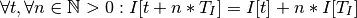
Similarly, given the period  of ,
of ,
We can determine the hyperperiod of the system as the of
input function period and the service function period,  .
.
At the start of the system, , the system’s buffer is empty,
i.e. ![B[0] = 0](_images/math/f6a3588d85e5c4783a1151a85bdb615bb4d66db1.png) . Therefore, the amount of data in the buffer
at the end of the first period,
. Therefore, the amount of data in the buffer
at the end of the first period,  , is the amount of data
that entered the system on input function but was not able
to be serviced by . At the start of the next period, this
data will exist in the buffer. Data in the buffer at the start of the
period can be compared to the system’s remaining capacity ,
since the remaining capacity of the system indicates how much extra
data it can transmit in that period. Consider the scenario that the
system’s remaining capacity is less than the size of the
buffer, i.e. . In this scenario,
, i.e. there will be more data in the buffer
at the end of the second period than there was at the end of the first
period. Since the system is deterministic, for any two successive
periods, and ,
, is the amount of data
that entered the system on input function but was not able
to be serviced by . At the start of the next period, this
data will exist in the buffer. Data in the buffer at the start of the
period can be compared to the system’s remaining capacity ,
since the remaining capacity of the system indicates how much extra
data it can transmit in that period. Consider the scenario that the
system’s remaining capacity is less than the size of the
buffer, i.e. . In this scenario,
, i.e. there will be more data in the buffer
at the end of the second period than there was at the end of the first
period. Since the system is deterministic, for any two successive
periods, and , ![B[n*T_p] >
B[(n+1)*T_p]](_images/math/be3783ed63b7ea54b972111d1dec43c2dea7d6dc.png) , which extends to:
, which extends to:
implying that:
meaning that the amount of data in the buffer versus time is not periodic, therefore the amount of data in the system’s buffer increases every period, i.e. the system has unbounded buffer growth.
If however, there is enough remaining capacity in the system to
service the data in the buffer, i.e. , then
![B[2*T_p] = B[T_p]](_images/math/33d4f4dd02841f21b6856ee7772cc8d0f77c4bf3.png) . This relation means that if the remaining
capacity of the system that exists after all the period’s required
traffic has been serviced is equal to or larger than the size of the
buffer at the end of the period, then in the next period the system
will be able to service fully both the data in the buffer and the
period’s required traffic. Since both the period’s traffic and the
buffer’s data will have been serviced in that period, the amount of
data in the buffer at the end of the period will be the same as the
amount of data that was in the buffer at the start of the
period. Similarly to above, since the system is deterministic, for any
two successive periods, and ,
. This extends to:
. This relation means that if the remaining
capacity of the system that exists after all the period’s required
traffic has been serviced is equal to or larger than the size of the
buffer at the end of the period, then in the next period the system
will be able to service fully both the data in the buffer and the
period’s required traffic. Since both the period’s traffic and the
buffer’s data will have been serviced in that period, the amount of
data in the buffer at the end of the period will be the same as the
amount of data that was in the buffer at the start of the
period. Similarly to above, since the system is deterministic, for any
two successive periods, and ,
. This extends to:
which implies that:
meaning that the amount of data in the buffer versus time is a periodic function, therefore the buffer size does not grow between periods, and the system has a finite buffer.
If we are only concerned with buffer growth, we do not need to
calculate , and can instead infer buffer growth by comparing
the values of the buffer at any two period-offset times during the
steady-state operation of the system ( ). This means
that the system buffer growth check can resolve to
). This means
that the system buffer growth check can resolve to ![B[2*T_p] ==
B[T_p]](_images/math/22f50a751ef795d2b5dd655238463e698c18a4c9.png) . This comparison abides by the conditions above, with
and .
. This comparison abides by the conditions above, with
and .
Comparison with NC/RTC¶
To show how our analysis techniques compare to other available methods, we developed our tools to allow us to analyze the input system using Network Calculus/Real-Time Calculus techniques as well as our own. Using these capabilities, we can directly compare the analysis results to each other, and then finally compare both results to the measurements from the actual system.
| System Data Rate vs. Time | System Data Analyzed with |
|---|---|
| 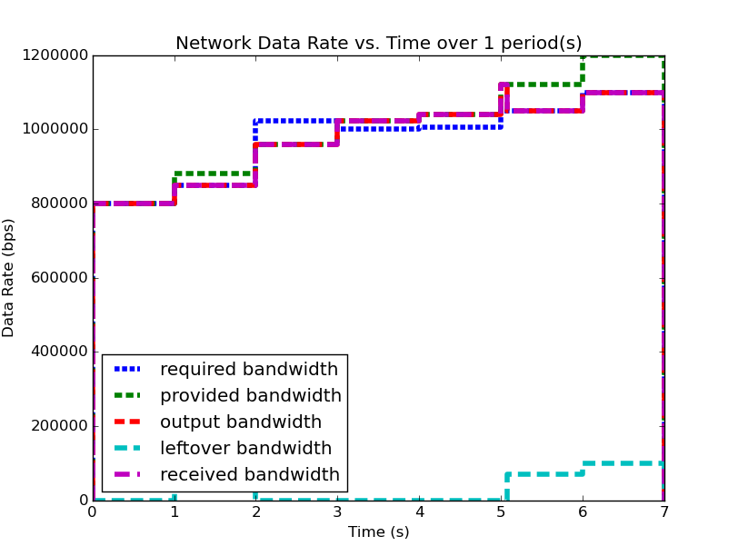 | 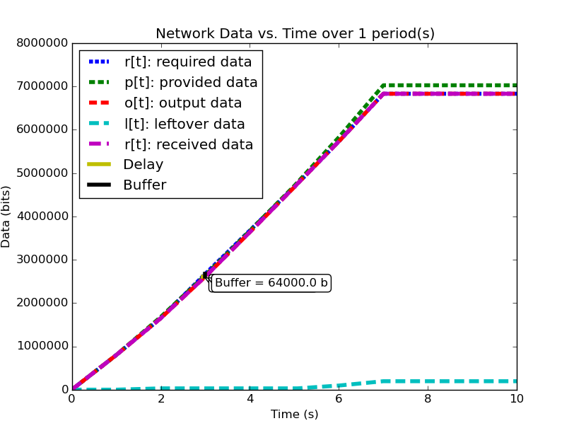 |
{kind=link}
{kind=link}
{kind=link}

Figure 2: Network-Calculus based analysis of the system.
The table above shows the data rate versus time profile describing the example system, side-by-side with the time-integrated and analyzed data versus time profile. Figure 1 shows a zoomed in portion of the second plot, focusing on the area with the maximum delay and buffer as analyzed by . Figure 2 shows the same system analyzed using Network Calculus.
The major drawback for Network Calculus that our work aims to solve is the disconnect from the real system that stems from using an approach based on time-window analysis. Such an approach leads to dramatically under-approximating the capacity of the network while simultaneously over-approximating the utilization of the network, since a known drop in network performance which is expected and handled by the application cannot be accurately modeled. In our case, the system is using a system profile which can service data during the period from seconds with a period of 10 seconds. The application is designed around this constraint and only produces data during that interval. Because our technique directly compares when the application produces data to when the system can service the data, we are able to derive more precise performance prediction metrics than Network Calculus, which compares the 3 seconds of system downtime to the 3 seconds of maximum application data production.
We developed software which produces data according to a supplied input profile and configured the system’s network to provide the bandwidth profile described in the system configuration profile. Using this experimental infrastructure, we were able to measure the transmitted traffic profile, the received traffic profile, the latency experienced by the data, and the transmitter’s buffer requirements. The results are displayed in the table below:
| Predicted | Measured () | |
|---|---|---|
| Buffer Delay (s) | 0.0625 | (0.06003 , 0.00029) |
| Time of Delay (s) | 3.0 | (2.90547 , 0.00025) |
| Buffer Size (bytes) | 8000 | (7722.59 , 36.94) |
Taking the results from our published work, where our methods predicted a buffer size of 64000 bits / 8000 bytes, we show that Network Calculus predicts a required buffer size of 3155000 bits. This drastic difference comes from the mis-match between down-time and max data production mentioned above.
Analysis of TDMA Scheduling¶
Medium channel access (MAC) protocols are used in networking systems to govern the communication between computing nodes which share a network communications medium. They are designed to allow reliable communication between the nodes, while maintaining certain goals, such as minimizing network collisions, maximizing bandwidth, or maximizing the number of nodes the network can handle. Such protocols include Time Division Multiple Access (TDMA), which tries to minimize the number of packet collisions; Frequency Division Multiple Access (FDMA), which tries to maximize the bandwidth available to each transmitter; and Code Division Multiple Access (CDMA) which tries to maximize the number of nodes that the network can handle. We will not discuss CDMA in the scope of this work.
In FDMA, each node of the network is assigned a different transmission frequency from a prescribed frequency band allocated for system communications. Since each node transmits on its own frequency, collisions between nodes transmitting simultaneously are reduced. Communications paradigms of this type, i.e. shared medium with collision-free simultaneous transmission between nodes, can be modeled easily by our modeling paradigm described above, since the network resource model for each node can be developed without taking into account the transmissions of other nodes.
In TDMA, each node on the network is assigned one or more time-slots per communications period in which only that node is allowed to transmit. By governing these timeslots and having each node agree upon the slot allocation and communications period, the protocol ensures that at a given time, only a single node will be transmitting data, minimizing the number of collisions due to multiple simultaneous transmitters. In such a medium access protocol, transmissions of each node affect other nodes’ transmission capability. Because these transmissions are scheduled by TDMA, they can be explicitly integrated into the system network resource model.
TDMA transmission scheduling has an impact on the timing characteristics of the applications’ network communications. Because applications’ network data production is decoupled from their node’s TDMA transmission time slot, buffering may be required when an application on one node tries to send data on the network during the transmission slot of a different node. In this case, the data would need to be buffered on the application’s node and would therefore incur additional buffering delay. If this TDMA schedule is not integrated into the analysis of the network resources, the additional buffer space required may exceed the buffer space allocation given to the application or the buffering delay may exceed the application’s acceptable latency.
So far, the description of the system provided network service profile
(![p[t]=y](_images/math/380e32ec071686ecc085988bde7ac1814b342625.png) ), has been abstracted as simply the available
bandwidth as a function of time integrated to produce the amount of
data serviced as a function of time. We show how to model and analyze
the network’s lower-level TDMA MAC protocol using our network modeling
semantics. We then derive general formulas for determining the affect
TDMA has on buffer size and delay predictions.
), has been abstracted as simply the available
bandwidth as a function of time integrated to produce the amount of
data serviced as a function of time. We show how to model and analyze
the network’s lower-level TDMA MAC protocol using our network modeling
semantics. We then derive general formulas for determining the affect
TDMA has on buffer size and delay predictions.
As an example TDMA system which benefits from our analysis techniques, consider an application platform provided by a fractionated satellite cluster. A fractionated satellite cluster consists of many small satellites that may each have different hardware, computing, and communications capabilities. These capabilities are provided to distributed components of the satellite cluster’s applications. Such a system has the combined challenges of (1) being expensive to develop, test, and deploy, (2) being very difficult to repair or replace in the event of failure, and (3) having to support mixed-criticality and possibly multiple levels of security applications. For this system, the network between these satellites is a precious resource shared between each of the applications’ components in the cluster. To ensure the stability of the network resources, each satellite has a direct connection to every other satellite and is assigned a slot in the TDMA schedule during which the satellite may transmit. Each TDMA slot has a sinusoidally time-varying bandwidth profile which may differ from the other TDMA slot bandwidth profiles. The time-varying profile of the slot bandwidth comes from the coupling between the radios’ inverse-squared bandwidth-as-a-function-of-distance and the satellites’ sinusoidal distance-as-a-function-of-orbital-position.
Such a system and applications necessitates design-time guarantees about resource utilization and availability. Applications which utilize the satellite network need assurances that the network resources they require during each part of the orbital period will be satisfied. To provide these assurances, we provide the application developers and system integrators the ability to specify and analyze the network profiles as (possibly periodic) functions of time. Furthermore, the requirement for accurate predictions necessitates the incorporation of the TDMA scheduling and bandwidth profiling into the network modeling and analysis tools.
TDMA schedules can be described by their period, their number of
slots, and the bandwidth available to each slot as a function of time.
For simplicity of explanation, we assume that each node only gets a
single slot in the TDMA period and all slots have the same length, but
the results are valid for all static TDMA schedules. Note that each
slot still has a bandwidth profile which varies as a function of time
and that each slots may have a different bandwidth profile. In a
given TDMA period ( ), the node can transmit a certain number
of bits governed by its slot length (
), the node can transmit a certain number
of bits governed by its slot length ( ) and the slot’s
available bandwidth (
) and the slot’s
available bandwidth ( ). During the rest of the TDMA
period, the node’s available bandwidth is
). During the rest of the TDMA
period, the node’s available bandwidth is  . This scheduling
has the effect of amortizing the node’s slot bandwidth into an
effective bandwidth of . The addition of the TDMA scheduling can affect
the buffer and delay calculations, based on the slot’s bandwidth, the
number of slots, and the slot length. The maximum additional delay is
. This scheduling
has the effect of amortizing the node’s slot bandwidth into an
effective bandwidth of . The addition of the TDMA scheduling can affect
the buffer and delay calculations, based on the slot’s bandwidth, the
number of slots, and the slot length. The maximum additional delay is
 , and the maximum additional
buffer space is
, and the maximum additional
buffer space is  . These deviations are shown below. Clearly,
. These deviations are shown below. Clearly,
 is bounded by and
is bounded by and
 is governed by . Therefore,
because is dependent on , minimizing
minimizes both the maximum extra delay and maximum extra
buffer space.
is governed by . Therefore,
because is dependent on , minimizing
minimizes both the maximum extra delay and maximum extra
buffer space.
| In-Phase TDMA profile vs abstract | Out-of-Phase TDMA Profile vs abstract |
|---|---|
{kind=link}
{kind=link}
Following from this analysis, we see that if: (1) the TDMA effective bandwidth profile is provided as the abstract system network service profile, and (2) the TDMA period is much smaller than the duration of the shortest profile interval; then the system with explicit modeling of the TDMA schedule has similar predicted application network characteristics as the abstract system. Additionally, the maximum deviation formulas derived above provide a means for application developers to analyze the their application on a TDMA system without explicitly integrating the TDMA model into the system profile model.
Compositional Analysis¶
Now that we have precise network performance analysis for aggregate profiles or singular profiles on individual nodes of the network, we must determine how best to compose these profiles and nodes together to analyze the overall system. The aim of this work is to allow the profiles from each application to be analyzed separately from the other profiles in the network, so that application developers and system integrators can derive meaningful perfomance predictions for specific applications. For this goal, let us define:
For our analysis techniques to be compositional, an application’s required profile must be analyzable individually without requiring aggregation with the rest of the required profiles in the system. This means that the system’s performance, i.e. the peformance of all the applications on the system, can be determined by analyzing the performance of each application individually.
For this compositionality, we must not only define mathematical
operations which allow us to aggregate and separate profiles with/from
each other, but also the semantics of how these profiles are composed
with one another. These semantics govern the relation between
required profiles, specifically governing the distribution of their
shared node’s provided profile between each other. For our
compositional analysis, we defined that each required profile in the
system be given a unique priority,  , with the relation that a
profile
, with the relation that a
profile  has a higher priority than profile
iff 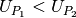. Using this priority relation, we can
define that a profile does not receive any capacity from
its node at time until all other profiles with priority
have received their requested capacity from the
node at . If the node does not have enough capacity at
to service , then the data attempted
to send at will be placed into its buffer, to be sent at a
time when the node has available bandwidth for .
has a higher priority than profile
iff 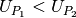. Using this priority relation, we can
define that a profile does not receive any capacity from
its node at time until all other profiles with priority
have received their requested capacity from the
node at . If the node does not have enough capacity at
to service , then the data attempted
to send at will be placed into its buffer, to be sent at a
time when the node has available bandwidth for .
This priority relation for compositional analysis is similar to the task priority used for schedulability analysis in Real-Time Calculus, mentioned in Real Time Calculus. Similarly to RTC, this priority relation and compositionality allow us to capture the effects independent profiles have on each other when they share the same network resources. Just as RTC based its priority relation and computation scheduling on a fixed-priority scheduler, our priority relation and resource allotment is based on the network Quality-of-Service (QoS) management provided by different types of networking infrastructure. One such mechanism for implementing this type of priority-based network resource allocation is through the use of the DiffServ Code Point (DSCP)[RFC2474]. The DSCP is a bit-field in all packets which have an Internet Protocol (IP) header which allows the packet to be assigned a specific class for per-hop routing behavior. Routers and forwarders in the network group packets according to their DSCP class and provide different service capacities to each class. For example, the Expedited Forwarding [RFC3246] class receives strict priority queuing above all other traffic, which makes it a suitable implementation of this type of resource allocation.
Mathematically, compositionality requires that we be able to add and subtract profiles from each other, for instance to determine the remaining service capacity of a node available for a profile after it serves all profiles with a higher priority. The remaining capacity, , of the node after it services is given as:
Where
- is the capacity available to profile
We are finalizing the design and code for tests which utilize the DSCP bit(s) setting on packet profiles to show that such priority-based analysis techniques are correct for these types of systems.
Delay Analysis¶
When dealing with queueing systems (esp. networks) where precise design-time guarantees are required, the delay in the links of the network must be taken into account.
The delay is modeled as a continuous function of latency (seconds)
versus time. In the profiles, the latency is specified discretely as
 pairs, and is interpolated linearly between
successive pairs.
pairs, and is interpolated linearly between
successive pairs.
Using these latency semantics, the delay convolution of a profile becomes
Where
![l[t]](_images/math/c52328274518603a2cc478a4db8925ffa035faed.png) is the link profile describing the data as a function
of time as it enters the link
is the link profile describing the data as a function
of time as it enters the link![\delta[t]](_images/math/2a0a2f67e07caa3e17e5f8f645b78f5cad3812dd.png) is the delay profile describing the latency as a
function of time on the link
is the delay profile describing the latency as a
function of time on the link- 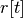 is the received profile describing the data as a function of time as it is received at the end of the link
When analyzing delay in a periodic system, it is important to determine the effects of delay on the system’s periodicity. We know that the period of the periodic profiles is defined by the time difference between the start of the profile and the end of the profile. Therefore, we can show that if the time difference between the start time of the received profile and the end time of the received profile is the same as the period of the link profile, the periodicity of the profile is unchanged.
 is the period of the link profile
is the period of the link profile- is the beginning of the received profile
- is the end of the received profile
We determine the condition for which :
Which is just confirms that the periodicity of the delayed profile is unchanged iff the latency profile is periodic, i.e.
Routing Analysis¶
Having discussed profile composition and the affects of delaying a profile, we can address one more aspect of system analysis: routing. For this analysis we will specifically focus on statically routed networks.
By incorporating both the latency analysis with the compositional operations we developed, we can perform system-level analysis of profiles which are routed by nodes of the system. In this paradigm, nodes can transmit/receive their own data, i.e. they can host applications which act as data sources or sinks, as well as act as routers for profiles from and to other nodes. To make such a system amenable to analysis we must ensure that we know the routes the profiles will take at design time, i.e. the routes in the network are static and known or calculable. Furthermore, we must, for the sake of profile composition as decribed above, ensure that each profile has a priority that is unique within the network which governs how the transmitting and routing nodes handle the profile’s data.
Let us define the system configuration  as:
as:
Where
- is the set of all sender profiles in the system configuration
- 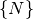 is the set of all nodes in the system configuration, and
- 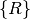 is the set of all routes in the system configuration
We define a profile  as:
as:
Where
- is the Node ID to which the profile applies
 is the kind of the profile, where
is the kind of the profile, where
- is the period of the profile
- 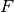 is the flow ID of the profile, where two profiles, belong to the same flow iff
- is the priority of the profile, where profile
has a higher priority than profile iff
, and
- is a set of tuples describing how each of vary with respect to time. Semantically, the
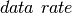 is constant between any two successive values of
, while the and are linearly
interpolated during the same interval. The initial profile
specification does not have the field; is
calculated based on .
Then we define a node  as:
as:
Where
- is the ID of the node
- is the provided profile of the node, and
- is the set of all receiver profiles on the node
And finally, we define a route as:
Where
We can then run the following algorithm to iteratively analyze the system:
analyze( sender_profiles )
{
sender_profiles = sorted(sender_profiles, priority)
for required_profile in sender_profiles
{
transmitted_nodes = list.empty()
for receiver_profile in required_profile.receiver_profiles()
{
route = getRoute(required_profile, receiver_profile)
for node in route
{
if node in transmitted_nodes and multicast == true
{
continue
}
provided_profile = node.provided_profile
output_profile = convolve(required_profile, provided_profile)
remaining_profile = provided_profile - output_profile
received_profile = delay(output_profile, provided_profile)
node.provided_profile = remaining_profile
required_profile = received_profile
transmitted_nodes.append(node)
}
receiver_received_profile = convolve(required_profile, receiver_profile)
}
}
}
In this algorithm, the remaining capacity of the node is provided to each profile with a lower priority iteratively. Because of this iterative recalculation of node provided profiles based on routed profiles, we directly take into account the effect of multiple independent profiles traversing the same router; the highest priority profile receives as much bandwidth as the router can give it, the next highest priority profile receives the remaining bandwidth, and so on.
We take care of matching all senders to their respective receivers, and ensure that if the system supports multicast, a no retransmissions occur; only nodes which must route the profile to a new part of the network retransmit the data. However, if the system does not support multicast, then the sender must issue a separate transmission, further consuming network resources. In this way, lower-level transport capabilities can be at least partially accounted for by our analysis.
We have implmented these functions for statically routed network analysis into our tool, which automatically parses the profiles, the network configuration and uses the algorithm and the implemented mathematics to iteratively analyze the network. Analytical results for example systems will be provided when the experimental results can be used as a comparison.
We are finishing the design and development of code which will allow us to run experiments to validate our routing analysis results. They will be complete in the next two weeks.
| [sifakis2002] | G. Goessler, J. Sifakis, “Composition for Component-Based Modeling,” Springer, Formal Methods for Components and Objects, 2003. |
| [RFC2474] | K. Nichols, Cisco Systems, et al., “Definition of the Differentiated Services Field (DS Field) in the IPv4 and IPv6 Headers,” IETF, RFC 2474, Dec. 1998. [Online]. Available: https://tools.ietf.org/html/rfc2474 |
| [RFC3246] | B. Davie, A. Charny, et al., “An Expedited Forwarding PHB (Per-Hop Behavior),” IETF, RFC 3246, Mar. 2002. [Online]. Available: https://tools.ietf.org/html/rfc3246 |